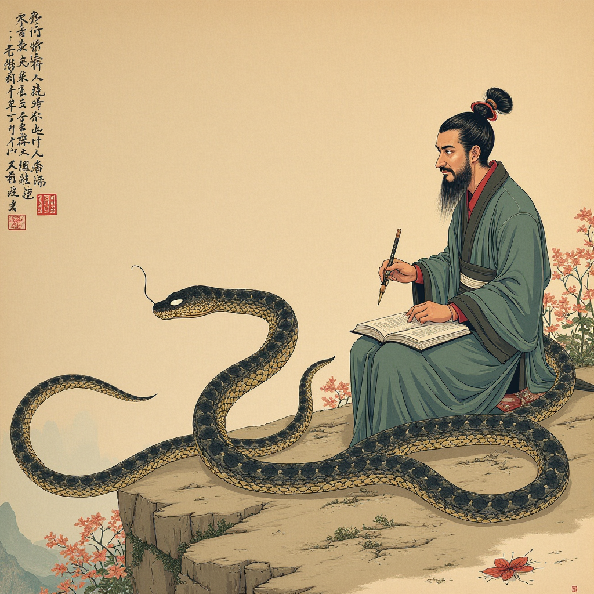

画蛇添足 (Huà shé tiān zú)
- 楚有祠者，赐其舍人卮酒。
- 舍人相谓曰：“数人饮之不足，一人饮之有余。请画地为蛇，先成者饮酒。”
- 一人蛇先成，引酒且饮之，乃左手持卮，右手画蛇，曰：“吾能为之足。”
- 未成，一人之蛇成，夺其卮曰：“蛇固无足，子安能为之足？”遂饮其酒。
- 为蛇足者，终亡此酒。
生成过程：基于成语“画蛇添足”的经典记载，我们设计了一幅图像来表现这个故事的关键场景：在一群人的注视下，一位舍人正在完成地上的蛇画，并试图为其添加脚，而另一舍人则刚刚完成了自己的蛇画并夺过酒卮。图像捕捉到了这一刻的紧张与戏剧性，同时传达了成语所蕴含的教训——做多余之事往往适得其反。
